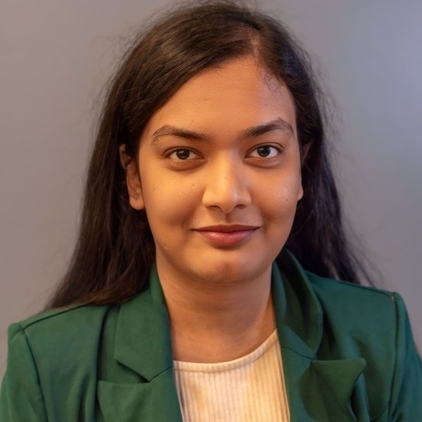

Making AI systems fairer by designing for the people who test them.
I study the human side of responsible AI: how practitioners find, understand, and fix discrimination in data-driven software. My work pairs empirical studies of real users with the tools they need, from causal fairness testers to LLM-driven test generation.

Research interests
Human-centered responsible AI
How ML practitioners actually reason about fairness, where tools fail them, and what support helps newcomers succeed.
Causal fairness & discrimination testing
Testing techniques that expose bias in data-driven systems, including bias hidden behind proxy features.
LLMs for trustworthy software
Using large language models to automatically generate discriminatory test cases at scale.
Where my work meets the people using AI
My research sits exactly between AI systems and the humans who build, evaluate, and are affected by them. I run empirical studies with ML practitioners and students, turn what I learn into process frameworks and tools, and publish at venues like VL/HCC and FSE. A research internship focused on AI and human systems would let me bring that mixed-methods, practitioner-centered approach to products used by millions of people.
- Empirical HCI methods: user studies with ML practitioners and students on fairness tools.
- Tool building: causal fairness testers, classroom tooling, and LLM-based test generation.
- Industry grounding: two years as a software QA engineer working with cross-functional teams.
- Communication: invited talks, two VL/HCC Graduate Consortium papers, and teaching five courses.
Latest news
| 2026 | Graduate Consortium paper at VL/HCC 2026: “Towards Onboarding Newcomers to Software Discrimination Testing.” |
| 2026 | Paper accepted at VL/HCC 2026: “Understanding Gaps in ML Fairness Tool Design: An Experience Report.” |
| 2026 | Paper at the TRUST workshop @ ASE 2026 on LLMs for automated discriminatory test generation. |
| 2026 | Serving on the Program Committee for CHASE 2026. |
| 2026 | Received the CEC Software Engineering Scholarship. |
| 2026 | Invited talk at the ACM Capital Region Celebration of Women in Computing. |
Research projects
My research combines empirical studies with tool development to help practitioners identify, evaluate, and mitigate discriminatory outcomes in data-driven systems.
Towards Supporting Newcomers in Causal Fairness Testing
- Conducted an empirical study of ML practitioners using a causal fairness testing tool for the first time.
- Identified the challenges and decision-making involved in performing causal fairness testing.
- Developed a preliminary process framework of the key stages of causal fairness testing to guide newcomer onboarding.
Integrating Fairness Testing into Software Engineering Education
- Developed instructional materials on software fairness and discrimination testing for an Ethics & Equity in Software Engineering course.
- Designed and built a tool for hands-on classroom exercises in systematic discrimination testing.
- Ran an empirical study of students' learning experiences and perceptions of these activities.
Uncovering Proxy-Masked Software Discrimination
- Built a causal fairness tester that finds bias hidden behind proxy features.
- Designed proxy discovery, minimal masking-set search, and realism constraints.
Large Language Models for Automated Discriminatory Test Generation
Exploring how LLMs can generate discriminatory test inputs automatically, lowering the effort needed to audit software for bias. Published at the TRUST workshop at ASE 2026.
Methods & skills
Research methods
User studies, interviews, think-aloud sessions, qualitative analysis, experience reports, mining open-source repositories.
Fairness & ML
Causal fairness testing, discrimination testing, fairness interventions, causal testing for deep neural networks.
Software engineering
Python, tool development, test design, manual & automated testing, API, regression and integration testing.
Papers
Peer-reviewed work on fairness tools, discrimination testing, and the people who use them.
Experience & education
Work
Graduate Teaching Assistant
TA for five courses spanning ethics, UI design, testing, algorithms, and programming. See Teaching.
Software Quality Assurance Engineer
- Designed and executed manual and automated test cases for functionality and reliability.
- Ran functional, regression, integration, and API testing to find and report defects.
- Worked with developers and cross-functional teams on troubleshooting and requirements analysis across the development lifecycle.
Education
Ph.D. in Computer Science
M.S. in Software Engineering
B.S. in Computer Science & Engineering
Teaching & mentoring
Graduate Teaching Assistant at George Mason University since 2022. I also built course materials and a classroom tool for teaching fairness testing.
Ethics & Equity in Software Engineering
Developed instructional materials and a hands-on tool for discrimination testing exercises.
User Interface Design and Development
Software Testing
Design & Analysis of Algorithms
Introduction to Object-Oriented Programming
Math Instructor
Shabab Murshid Development Foundation (volunteer).
Recognition & community
Invited talks
| 2026 | ACM Capital Region Celebration of Women in Computing |
| 2024 | Eastern Atlantic Students in Software Engineering Colloquium, The College of William & Mary |
Awards & honors
| 2026 | CEC Software Engineering Scholarship |
| 2023 | Research Fellowship, Center for Advancing Systems Science and Bioengineering Innovation |
| 2019 | Best Paper Award, IEEE WIECON |
Professional service & volunteering
| 2026 | Program Committee, 20th International Conference on Cooperative and Human Aspects of Software Engineering (CHASE) |
| 2025 | Student Volunteer, 33rd ACM International Conference on the Foundations of Software Engineering (FSE) |
| 2018 | Math Instructor, Shabab Murshid Development Foundation |
Let's talk
I'm looking for research internship opportunities in human-centered and responsible AI. I'd be glad to hear from researchers and teams working on how people build with, evaluate, and are affected by AI systems.
Affiliation
Department of Computer Science, George Mason University, Fairfax, Virginia